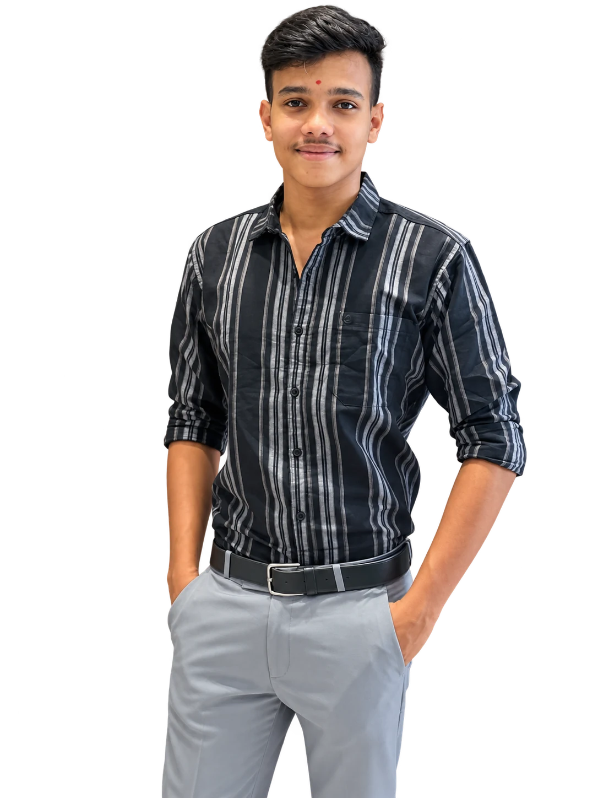
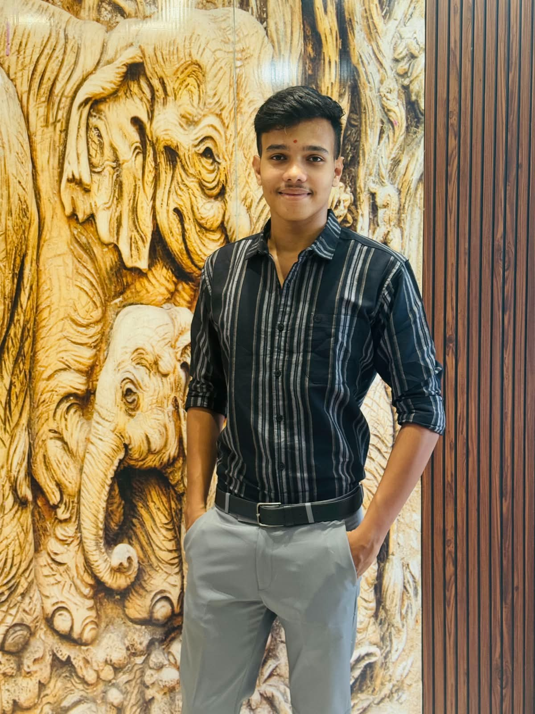

SCROLL TO EXPLORE ↓
01 / 03

INDIVIDUAL STYLE. EVERY DAY.SELECTED LOOKS
01 — 05CUT ONCE.
WORN FOR
YEARS.
A striped shirt. A clean silhouette.
An everyday expression of personal style.
A visual collection demo featuring your original portrait. Additional outfits are AI-created style previews.
THE COLLECTION / 01
Signature striped shirt
THE ORIGINAL LOOK
CHOOSE A LOOKSave your favorite look on this device.
LOOK DETAILS +
Dark charcoal shirt with fine vertical stripes, an open collar, and light tailored trousers.
ABOUT THIS COLLECTION +
A design demo inspired by the supplied video. The original look uses your background-removed photo. The other two outfits are demo styling concepts.